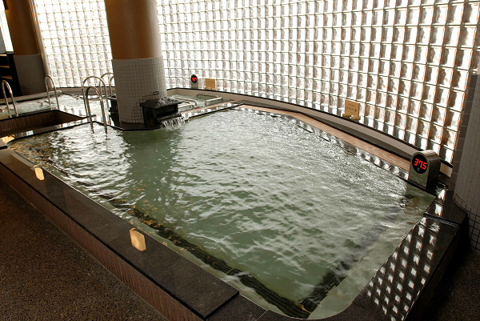
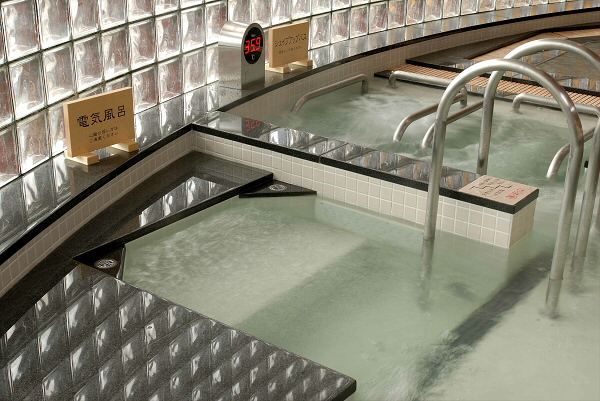

| 面白さ | 快適さ | 料金 | 衛生面 | 周辺施設 |
|---|---|---|---|---|
| 4 | 5 | 3 | 3 | 2 |
今回は青森市の東大野にある「極楽湯」さんを訪れました。
全国展開している企業という事もあり、建物全体がとても大きいです。
泉質は単純温泉という事で、神経痛や不眠症、疲労回復などに効果があります。
ホールは広く、開放感あり。
脱衣所は広いからか少し散らかっていたり、足元が濡れている場所があるといった点が気になりました。
浴場は想像していた通り広く、温泉の数も多い事から、まるでテーマパークにいるようです笑
お風呂は自然の湯に加え、電気風呂、炭酸風呂、ジェットバスといった感じで魅力的なものが勢ぞろい。

そして大型店だけあってやはり人が多い。
ただ、極楽湯さんは墨を入れた方の入館を禁止しているので、人が多くても安心して利用できるように配慮されているようです。
お湯は透明でつるつるしており、最近睡眠が浅い私はゆっくりと浸かり、疲労回復に努めました。
また、特に印象に残ったのが電気風呂で、刺激が強すぎず弱すぎずといった感じで、これが最高に気持ちいい...

最後に、熱くなった体を水風呂で癒してから浴場を後にしました。
そして極楽湯さんといえば最近では、アニメキャラクターとのコラボに力を入れているご様子。
ちなみに1月27日から2月28日にかけて「ホロライブ」というVTuberさんとコラボしているようです。
コラボ期間限定グッズやメニューがあり、どれもファンの方が関心を示すクオリティとなっていました。
少し話を伺うと、コラボイベントは「新規のお客さん」の獲得を狙いとしているようで、実際に県外からもコラボ目当てに多くの方が訪れたとの事。
そういったコラボに加え、定期的にイベントを開催しているようで、通い続けたくなるようなサービスが豊富に提供されているように思います。
ただ、ゲームコーナやキッズコーナーがあるのは嬉しいのですが、少しゲームの種類が物足りないように感じました。
そうして色々と見て回って、帰ろうとする際、店員さんの対応がよかった事で気分をよくした私は、気持ちよく極楽湯さんをあとにしました。
お風呂が素晴らしい事に加え、リラクゼーションコーナーも充実していた為、長時間滞在してしまいました。
衛生管理も徹底されているとの事から、コロナ渦でも安心して利用できるのがいいですね。
私も好きなアニメが幾つかあるので、それらと極楽湯さんがコラボした際は定期的に通う事になりそうな予感がします笑
次はアニメ好きな友人を誘って伺いたいと思います。